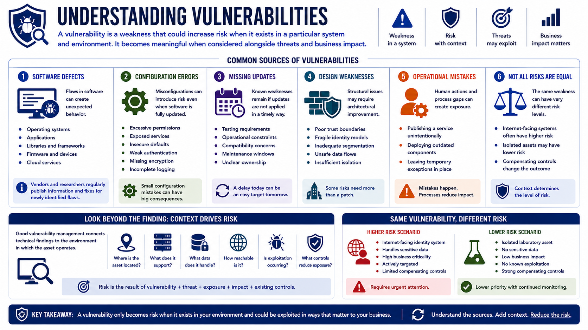

What Is Vulnerability Management?
Understanding Vulnerabilities
Connecting to LMS... Progress: in progress
Version 1.0 | Date: 2026-06-18 | Educational overview of vulnerability management concepts.

Narration
A vulnerability is a weakness that could increase risk when it exists in a particular system and environment. It may be technical, procedural, architectural, or operational, and it becomes meaningful when considered alongside threats and business impact.
Software defects are one common source. A flaw in an operating system, application, library, firmware image, or cloud service can create unexpected behavior. Vendors and researchers regularly publish information and fixes for newly identified flaws.
Configuration errors are another major source. Excessive permissions, exposed services, insecure defaults, weak authentication settings, missing encryption, or incomplete logging can create risk even when the underlying software is fully updated.
Missing updates matter because known weaknesses can remain present after a vendor releases a correction. Updates may be delayed by testing requirements, operational constraints, compatibility concerns, maintenance windows, or lack of clear ownership.
Design weaknesses can be deeper than a single patch. Poor trust boundaries, fragile identity models, inadequate segmentation, or unsafe data flows may require architectural improvement rather than a routine software update.
Operational mistakes can also create exposure. An administrator may publish a service unintentionally, a team may deploy an outdated component, or a temporary exception may remain in place after its original purpose ends.
Not every vulnerability creates equal risk. The same technical weakness may be urgent on an internet-facing identity system and much less significant on an isolated laboratory asset with strong compensating safeguards.
Good vulnerability management therefore connects technical findings to context: where the asset is located, what it supports, what data it handles, how reachable it is, whether exploitation is occurring, and what controls already reduce exposure.